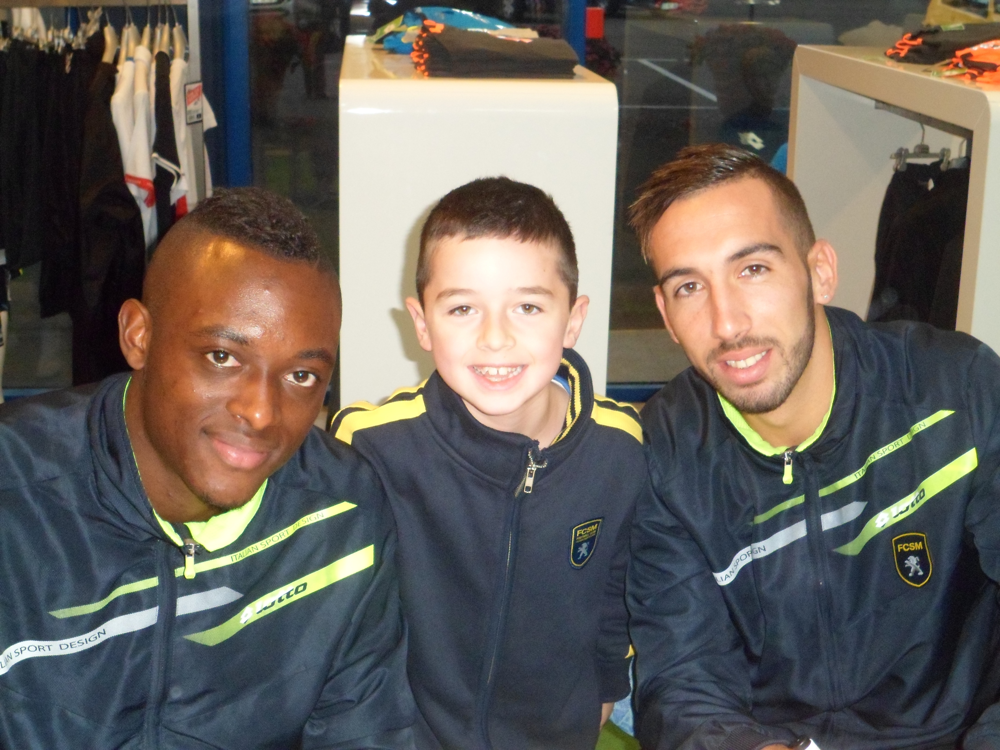
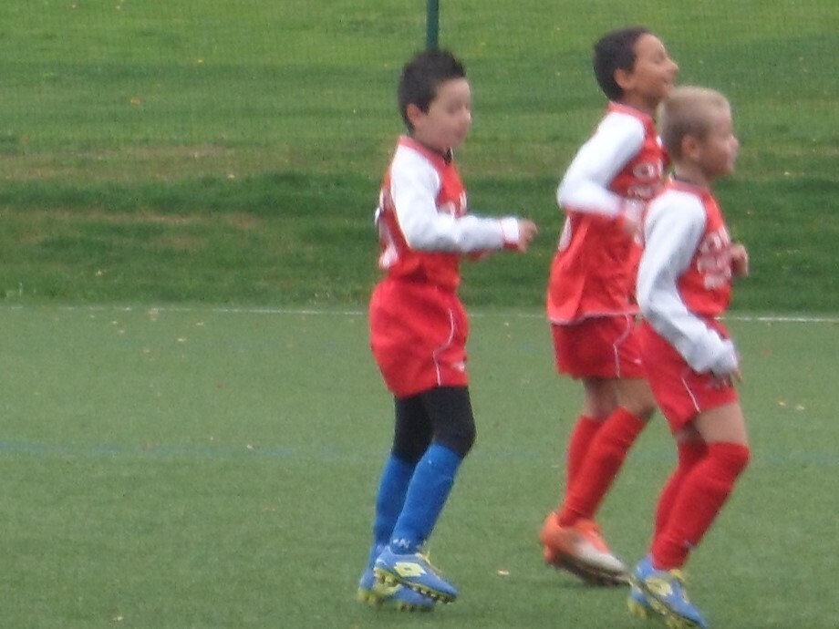
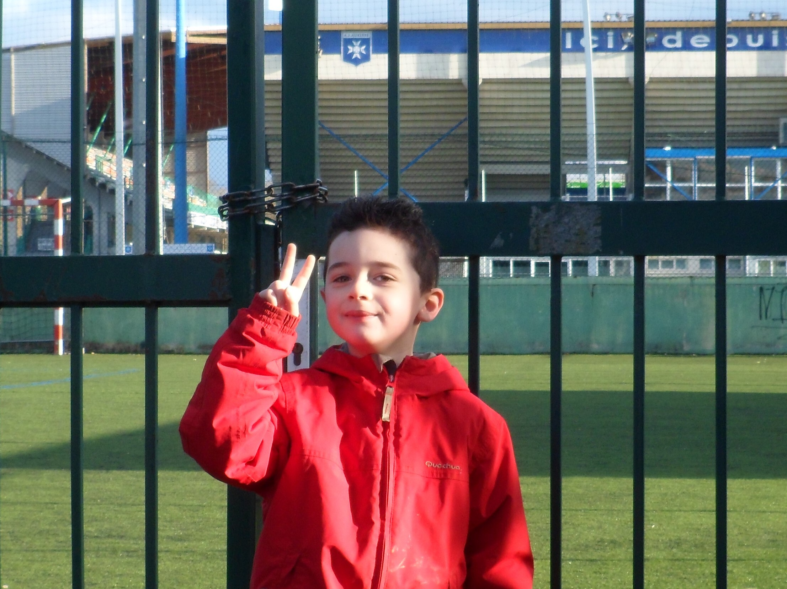
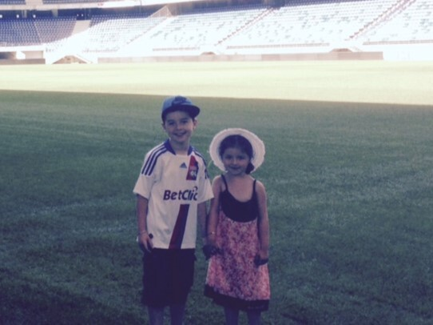

Le football a toujours occupé une place importante dans ma vie. Depuis que je suis tout jeune, je prends plaisir à jouer au foot, que ce soit en club ou avec des amis, et même à regarder des matchs.
Ce sport m'a permis pendant 8 ans de non seulement rester actif, mais aussi de développer des compétences telles que le travail en équipe et la discipline.
J'adore me rendre dans des stades où l'ambiance et la ferveur sont incroyables, et où chaque supporter vit le match avec passion. Le football apporte aussi une communauté et des moments mémorables avec des amis.
Découvrez ci-dessous quelques moments capturés pendant mes aventures footballistiques :



